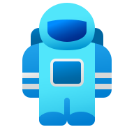

Skip to main content

404
Oops! The page you're looking for doesn't exist or has moved.
Go Home
Search Articles
Contact Me
⚡ Explore Popular Resources:
📖
Qur'an Reciter
📜
108 Master Verses
✨
About Ruqyah
Esc
Suggested Entries
01
108 Master Verses Concordance
Corpus
03
Qur’an Recitation Engine (114 Surahs)
Audio Engine
03
About Zahiruddin & Ruqyah Editorial Mission
Editorial
Type to filter • Press Esc to close
⌘K / Ctrl+K
⌨
Keyboard Shortcuts
✕
Single-Key Shortcuts
Enable letters like T, H, A, C without Ctrl
General Navigation
Search & Command Palette
Ctrl + K
Toggle Light / Sepia / Dark Theme
T
Open Shortcuts Help
?
Close Dialogs & Overlays
Esc
Audio & Quran Player
Play / Pause Audio
Space
Previous / Next Ayah
← / →
Minimize / Restore Audio Bar
V